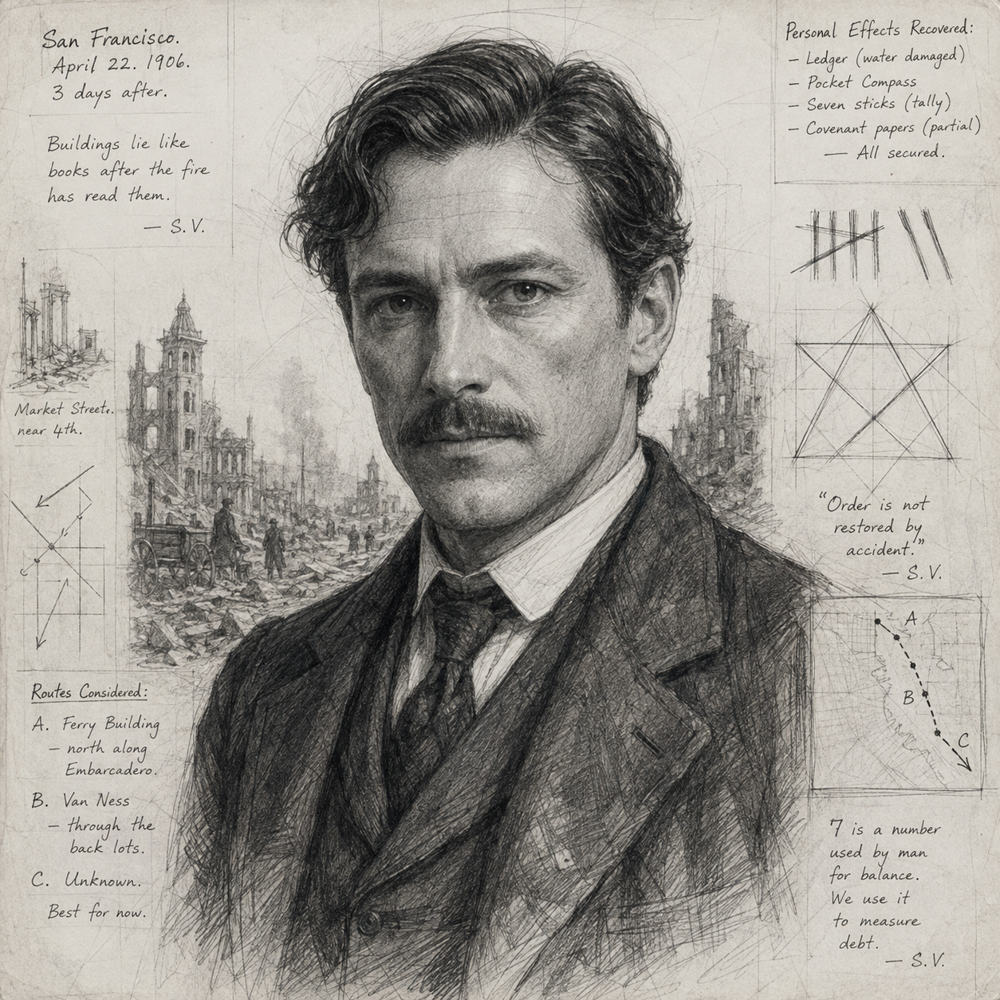
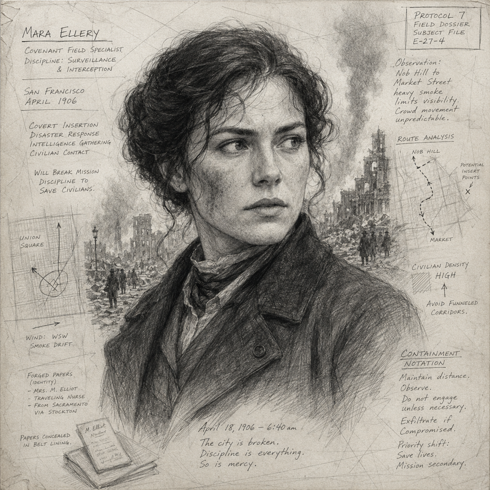

The whole story
During the 1925 Nome diphtheria emergency, fictional remote operator Evie Mercer is keeping a battered regional radio/telegraph relay alive while medical traffic, weather warnings, route changes, and supply requests arrive in fragments. The Vectors think the mission is to get one critical message through before a storm isolates the station. That is only the immediate problem. Mercer has improvised a procedure that lets independent stations number fragments, repeat them back, reconstruct incomplete traffic, and request only missing sections. In baseline history the procedure disappears with the station logs. Aletheia needs the method to survive—not just tonight’s message.
Players think
Restore or protect a failing relay station and make sure a medically important message gets through.
GM knows
The message is the false finish line. The true Carrier is Mercer’s reproducible relay protocol.
Covenant offer
They will help today’s medical traffic succeed if the Vectors agree not to spread Mercer’s procedure.
Dramatic question
When secrecy protects history but redundancy protects lives, which kind of safety matters more?
The adventure runs alongside the real 1925 Nome diphtheria emergency. Contemporary reporting described urgent antitoxin needs, dog-team relays, and Nome’s radio station operating day and night. The adventure does not replace those events or assign their success to the Vectors.
The fictional station exists because Alaska’s distances make communication itself a survival tool. In winter, a damaged line, weak generator, exhausted operator, or garbled message can matter as much as a blocked trail.
Use weather to narrow choices rather than as a random damage tax: cold makes repairs slower, travel costly, equipment unreliable, and every trip outside worth thinking about.
| Question | Answer |
|---|---|
| Immediate crisis | A fragmented emergency transmission must be reconstructed and forwarded before worsening weather closes the easiest route. |
| False objective | Get that one message through. |
| True Carrier | Mercer’s emergency relay procedure: numbered fragments, repeat-back confirmation, independent reconstruction logs, and selective requests for missing fragments. |
| Baseline loss | The station logs scatter; the method is remembered only as local improvisation and never becomes shared practice. |
| Future importance | The procedure helps create a culture of decentralized emergency communications where local nodes keep functioning when central coordination is incomplete. |
| Covenant concern | The same logic later supports interoperable emergency networks used by Aletheia. |
Revelation ladder
| Revelation | Player feeling |
|---|---|
| Mercer is the operational fulcrum. | Keep her and the station functioning. |
| The traffic is incomplete but reconstructable. | We can solve this. |
| The message succeeds, but the mission does not clear. | That was only tonight’s problem. |
| Mercer created a repeatable protocol. | This can spread. |
| Independent copies create resilience and footprint. | Success itself creates risk. |
| Covenant will save lives now while blocking propagation. | Their position is not monstrous. |

Evie Mercer — Relay Operator
Wants: Keep traffic intelligible and useful.
Fear:
Someone dies because a message arrives garbled.
Voice:
Dry, exact, impatient with drama.
Line: “A message
isn’t sent when you transmit it. It’s sent when somebody else can
rebuild it.”

Jonas Pell — Station Hand
Keeps the generator, mast, feed lines, and heat alive. Makes mechanical competence and physical risk matter.

Dr. Anna Rusk — Local Physician
Needs accurate medical traffic, not heroics. Humanizes the stakes without replacing real historical physicians.

Thomas Vale — Regional Clerk
Can circulate the procedure if convinced it is reproducible rather than one-off improvisation.

Silas Venn or Covenant Successor
Wants today’s emergency solved and Mercer’s protocol contained. “You are turning one winter’s improvisation into the ancestor of a command network.”

Mara Ellery or Field Substitute
Prioritizes containment, but will not knowingly sacrifice civilians simply to win the ideological argument.
| Conclusion | Door 1 | Door 2 | Door 3 | Fail-forward |
|---|---|---|---|---|
| Mercer is the fulcrum | Failed handoffs route through her logs | Pell says she tracks missing fragments | Rusk cites a prior reconstructed request | A second station asks for “Mercer’s sequence.” |
| The method is the Carrier | Another operator uses her numbering | Mercer can teach it in four steps | Covenant offers to save the message but burn procedure notes | Aletheia confirms the discontinuity remains after immediate success. |
| Independent copies matter | Vale proposes a regional circular | Neighboring station copies it | Pell makes a station training card | Mercer asks who can use it if she is gone. |
1 — Briefing: The Message That Vanishes
Purpose: Establish the historical boundary and communications discontinuity.
2 — Insertion: Cold That Changes Plans
Open with a practical crisis near the station: snapped support, stalled sled, injured traveler, exposed feed line, or overloaded generator.
Failure changes: time, gear, fatigue, witness footprint, or Storm Clock—not access to the adventure.
3 — The Station Is Already Failing

Mercer keeps the signal intelligible while every other system strains.
Mercer handles traffic while Pell fights mechanical failure. Present several useful jobs at once so every Vector can contribute. Mercer is competent but overloaded, not a helpless quest-giver.
4 — Fragments
A medically important transmission arrives incomplete. Some fragments repeat, one is garbled, one is missing. Mercer’s log lets the team identify exactly what they have and request only the missing content.
5 — False Victory: Message Received
Give them the relief. Then show that Aletheia’s mission indicator does not clear.
6 — What Did Mercer Actually Invent?
The logs reveal that Mercer has turned local habits into a compact repeatable procedure. Another station can use it without her. She considers it obvious craft, not invention.
Purpose: Reveal the true Carrier.
7 — The Covenant’s Offer
Opposition offers to help keep medical traffic alive for the remainder of the crisis if the Vectors agree Mercer’s procedure stays local.
8 — Build the Carrier
| Route | Benefit | Risk |
|---|---|---|
| Neighboring-station copy | Immediate independent replication | Witness and log footprint |
| Regional circular | Institutional propagation | Durable paper trail |
| Station training card | Survives Mercer’s absence | Fragile unless copied elsewhere |
| Player-created route | Rewards agency | Exposure based on footprint |
9 — Storm and Interference

Outside work costs heat, time, and certainty.
Escalate according to player choices. Weather threatens the chosen route; Covenant uses forged instructions, interception, theft, or recovery of exposed future technology. Combat only when someone is physically contesting a concrete objective.
10 — Verification: Two Copies, Same Mark
Aletheia verifies that Mercer’s method persisted beyond the original station. Two independently created copies are displayed. Each bears the seven-stroke annotation in a place neither should share.
| Vectors are… | Covenant response |
|---|---|
| Getting the medical message through | Help or stay out of the way. |
| Studying Mercer’s method | Argue that local craft need not become institutional practice. |
| Teaching a second station | Offer compromise, then disrupt documentation. |
| Creating regional distribution | Intercept circulars, alter routing, steal duplicate logs. |
| Using obvious future technology | Prioritize anomaly recovery, even if Carrier containment suffers. |
| Problem | Fix |
|---|---|
| Players think adventure ends when message arrives | Give relief, then immediately show the discontinuity remains. |
| Players think they need radio expertise | Keep technical execution character-facing and choices player-facing. |
| Players refuse to distribute the method | Valid choice. Let them pursue a Fragile/Contained outcome. |
| Players invent a better modern protocol | They may clarify Mercer’s work, not replace it with future doctrine without Exposure consequences. |
| Players attack Covenant immediately | Have Covenant first help keep medical traffic alive. |
| Repeated failures threaten total station collapse | Station remains usable at increased cost. |
| Players side with Covenant | Valid. The question becomes what minimum continuity they will preserve. |
Pacing
| Time | Target |
|---|---|
| 0:00–0:30 | Briefing + insertion |
| 0:30–1:30 | Station + fragmented message |
| 1:30–2:00 | False victory |
| 2:00–3:00 | Carrier revelation + Covenant |
| 3:00–4:15 | Propagation + interference |
| Final 15 min | Verification + debrief; never cut |
Clean Success
Carrier Established/Durable, Exposure 0–2. Mercer’s procedure becomes ordinary regional craft.
Exposed Success
The method survives, but anomalous records or witnesses persist.
Contained Failure
Today’s emergency traffic succeeds, but the method remains Fragile or disappears.
Exposed Failure
The method disappears and temporal evidence remains.
Debrief prompts
- Was the Covenant wrong to separate today’s lives from tomorrow’s network?
- Did the team preserve Mercer’s work or improve it beyond what history could plausibly own?
- Which mattered more: redundancy or secrecy?
- What does the same seven-stroke mark on two independent copies imply?
Record Carrier state, Exposure, Mercer and Pell outcomes, Covenant relationship, surviving transmission routes, any future technology exposed, and the team’s conclusion about the paired seven-stroke marks.
M01 callback: A Durable Ash Ledger can provide one small, historically ordinary engineering advantage in reinforcing or repairing the station. Failure in M01 removes only that convenience.
M03 setup: M02 determines whether a distant documentary confirmation in The Paper Harbor arrives cleanly, late, or through a compromised chain.